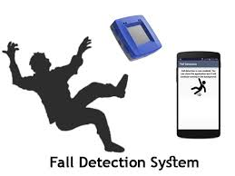
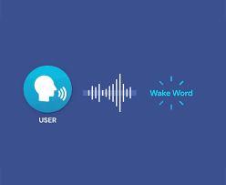
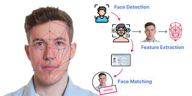

I'm Ravindra Singh, a Data Scientist specializing in Machine Learning, Deep Learning, Embedded AI, Computer Vision, Speech Processing, LLM, and NLP, building AI solutions from data to deployment.
I'm a data scientist with a passion for building models. I believe data is the most powerful tool we have for understanding the world and making better decisions. My core skills span data analysis, data visualization, machine learning, and deep learning.
I often work on end-to-end data science projects — everything from collecting and cleaning the data to building, validating, and deploying the final model. You can take a look at some of my projects and articles in the sections below; I link each one to its GitHub repository, so feel free to download my code and play around with it. Most of my learning has come from online platforms, and I'm always picking up something new.
Hands-on projects across multiple data modalities — audio, computer vision, time-series sensor signals, video, and NLP — built from raw data to production-ready models.
Developed a real-time fall detection system using inertial sensor data collected from IMU and LSM sensors. Sensor data was acquired with accelerometer and gyroscope ranges configured to ±16g and 2000 dps respectively, to capture high-impact fall events accurately.
The dataset consisted of multiple fall scenarios and normal daily activities. Preprocessing involved cleaning, filtering, and preparing the sensor signals to remove noise and improve data quality, then converting the readings into a format suitable for deep-learning classification.
A lightweight 2D Convolutional Neural Network (CNN2D) was designed and trained for fall-event recognition. The final model contained roughly 14,000 parameters, making it suitable for deployment on resource-constrained embedded hardware. The trained model was integrated and executed on the target device for real-time on-device inference, achieving an overall classification accuracy of 93%.

Developed a real-time wake word detection system using both I²C digital microphones and ADC-based analog microphones for embedded voice-activation applications. Audio was collected from both interfaces to build a robust dataset of target wake words and non-target speech/background sounds.
Signals were recorded at an 8 kHz sampling rate, 16-bit resolution, and mono channel to optimize memory and compute for embedded deployment. During preprocessing, Mel-Frequency Cepstral Coefficients (MFCCs) were extracted to capture the most relevant speech characteristics for keyword recognition.
A lightweight Gated Recurrent Unit (GRU) network was designed and trained on the MFCC features. Separate datasets from the I²C and ADC microphone configurations were used to evaluate robustness across hardware interfaces. The deployed system achieved an overall classification accuracy of 96%, demonstrating reliable hands-free voice activation for edge AI.

Developed a Face ID Recognition System using image data collected through an ESP32 camera module for embedded biometric authentication. The project involved collecting and labeling facial image datasets, followed by preprocessing and augmentation to improve robustness under varying lighting and pose conditions.
A lightweight Convolutional Neural Network (CNN) was designed and trained for face identification while maintaining a small memory footprint suitable for edge deployment. The final model contained roughly 5,000 parameters, enabling efficient execution on resource-constrained hardware.
The trained model was optimized and deployed on the GPX10 AI processor, providing real-time face recognition with high accuracy and low inference latency. The system achieved an overall classification accuracy of 99%, demonstrating reliable performance for embedded authentication and access-control applications.

Developed a GPX10 command word detection system using MFCC-based audio features, trained a lightweight deep learning model for voice command recognition, deployed real-time inference on hardware.
Designed and deployed a decoder-based healthcare chatbot on GPX10 using a compact SLM (<100K parameters), enabling efficient edge-AI conversational assistance with 89% accuracy and low-resource operation.
Developed a house price prediction model using regression techniques on the Melbourne Housing Dataset, performing data preprocessing, feature engineering, and model evaluation to generate accurate property price estimates.
Developed a face mask detection system using a CNN model to classify masked and unmasked individuals, enabling real-time inference on embedded hardware.
A quick career snapshot. Download full CV →
Insights on engineering, career growth, and data science.
Building a lightweight Face ID system on the ESP32 with a ~5K-parameter CNN, deployed at 99% accuracy.
A decoder-only SLM under 100K parameters for on-device healthcare conversation, running at 89% accuracy.
Real-time keyword spotting across I²C and ADC microphones for embedded voice activation.
A ~14K-parameter CNN2D for real-time fall detection from IMU sensor data.
Credentials and continuing education.
Internshala
Udemy
Udemy
CMR University
Let's discuss your training goals, product ideas, or hiring needs.